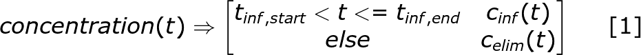

- in Python using a jupyter notebook and matplotlib

*by Kurt Pessa, MS, PharmD*
|
|
|
|---|
 **External Links**
1. ASHP, IDSA, PIDSA 2020 Joint guidelines
**External Links**
1. ASHP, IDSA, PIDSA 2020 Joint guidelines Python Dependencies
```python import math import numpy as np import matplotlib.pyplot as plt ```Declaring Random PK Parameters
```python Dose = 1000 # mgs t_inf = 1 # hrs K_e = 0.100 ~ t1_2 = 6.9 hrs # Ke of 0.100 ~ 105 mL/min CrCl using 1985 Matze eqn V_d = 45.5 # L ~ 70 kg * 0.65 L/kg tau = 12 ```
1. `c_inf(t)` ⇒ If infusing, use infusion equation 2. `c_elim(t)` ⇒ Else, use first-order elimination equation **In Python:** ```python # General concentration equation def concentration(t): if t_inf_start < t <= t_inf_end: return c_inf(t) else: return c_elim(t) ```
```latex concentration(t) \Rightarrow \begin{bmatrix} t_{inf,start} < t <= t_{inf,end} & c_{inf}(t)\\ else & c_{elim}(t) \end{bmatrix} \:\:\:\:\:\:\: [1] ```
\\[c_{inf}(t) \Rightarrow \frac{R_0}{CL_{vanco}}(1 - e^{-K_e \times t}) \:\;\;\;\;\; [2] \\]
R_0 (The rate of infusion) is:
 **In Python:**
```python
#Rate of Infusion
R_0 = Dose / t_inf
```
>
**In Python:**
```python
#Rate of Infusion
R_0 = Dose / t_inf
```
> \\[R_0 = \frac{Dose}{T_{inf}} \\]CL_vanco (Vancomycin clearance) is:
 **In Python:**
```python
#Vancomycin Clearance
CL_vanco = K_e * V_d
```
>
**In Python:**
```python
#Vancomycin Clearance
CL_vanco = K_e * V_d
```
> \\[CL_{vanco} = K_e \times V_d\\]c_eoi is the concentration at the end of infusion Tinf = t
**In Python:**
```python
def c_elim(t):
return c_eoi * math.exp(-K_e * (t - t_inf))
```
> \\[c_{elim}(t) \Rightarrow c_{eoi} \times e^{-K_e \times (t-t_{inf})} \:\:\:\:\:\:\: [3]\\]